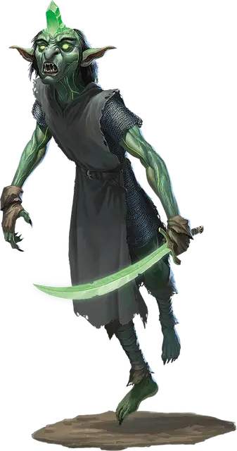

Рукситид Избранный
Ruxithid the Chosen
Средняя Аберрация (Гоблиноид), нейтрально-злая, именной НИП

Класс Доспеха 15 (кольчужная рубаха)
Хиты 88 (16к8 + 16)
Скорость 30 футов, летая 30 футов (парит)
| мод | спас | ||
|---|---|---|---|
| СИЛ | 14 | +2 | +2 |
| ЛОВ | 19 | +4 | +4 |
| ТЕЛ | 12 | +1 | +1 |
| мод | спас | ||
|---|---|---|---|
| ИНТ | 18 | +4 | +7 |
| МДР | 15 | +2 | +5 |
| ХАР | 12 | +1 | +1 |
Навыки Восприятие +5, Проницательность +5, Скрытность +10
Сопротивление урону психическая энергия
Чувства тёмное зрение 60 футов, пассивное Восприятие 15
Языки Общий, Гоблинский, Телепатия 60 фт.
Опасность 5 (1800 опыта)
Бонус мастерства +3
Особенности
Легендарное сопротивление (2/день). Если Рукситид проваливает спасбросок, он может вместо этого сделать спасбросок успешным.
Ментальная стойкость. Рукситид совершает с преимуществом спасброски против эффектов, которые могут его очаровать или испугать.
Действия
Мультиатака. Рукситид совершает две атаки Пси-Заряженным скимитаром.
Пси-заряженный скимитар. Рукопашная атака оружием: +7 к попаданию, досягаемость 5 футов, одна цель. Попадание: 11 (2к6 + 4) рубящего урона плюс 7 (2к6) психического урона.
Бонусные действия
Мозговые щупальца (перезарядка 5–6). Рукситид выпускает из своего мозга шквал кристаллических психических щупалец, нацеленных на одно существо, которое он может видеть в пределах 30 футов от себя. Цель должна преуспеть в спасброске Ловкости Сл 15 или получить 9 (2к8) психического урона и будет ошеломлена до начала следующего хода Рукситида.
Боевое командование. Рукситид приказывает одному союзному существу, которое он видит в пределах 60 футов от себя, нанести удар. Существо может немедленно реакцией совершить одну рукопашную атаку оружием по цели в пределах досягаемости.